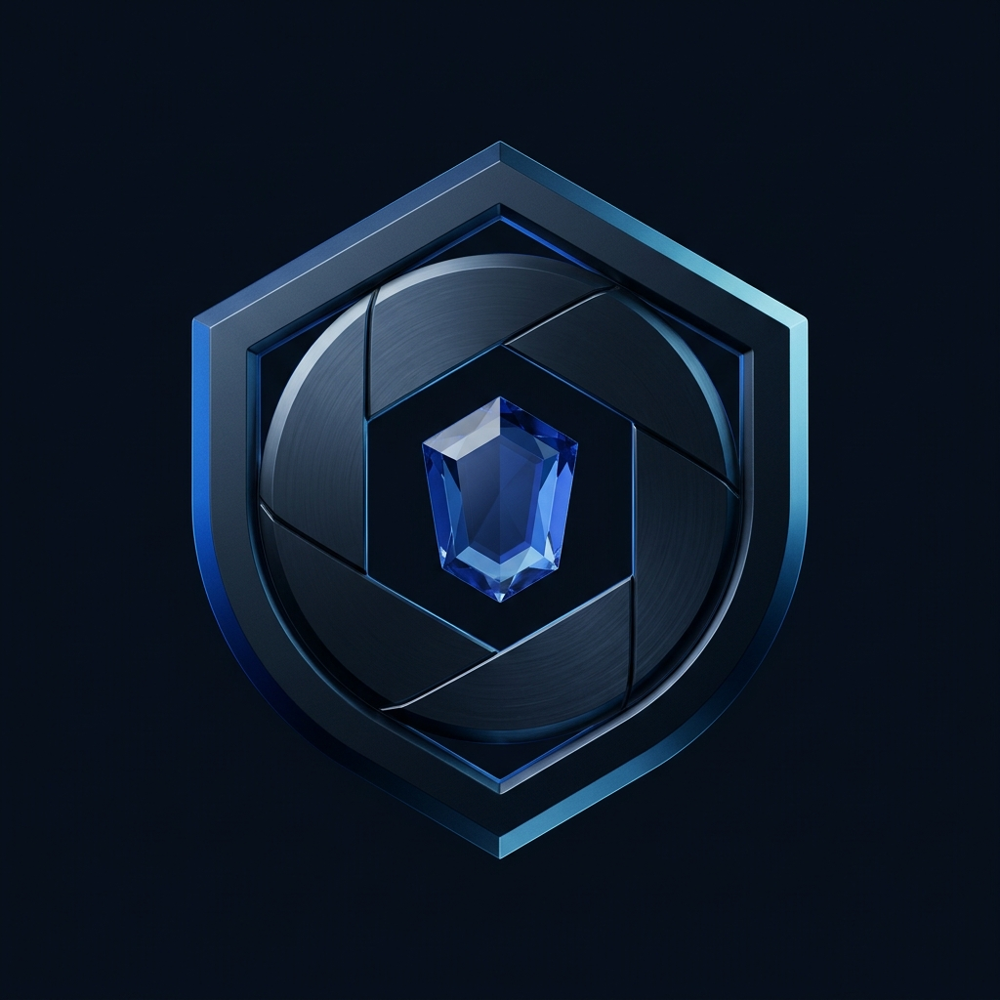
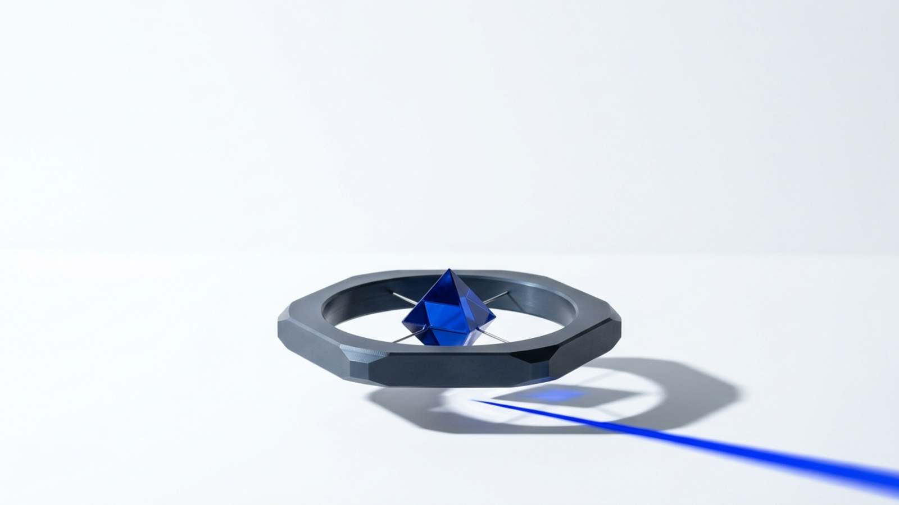
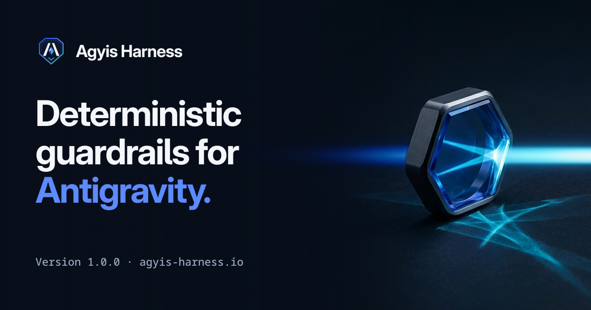

Agyis Harness brand kit
The Orbital Aegis identity pairs an anodized obsidian-marine hexagonal shield with a suspended sapphire-cobalt optical keystone. All vector marks, raster icon packs, and studio visuals are open for documentation and release media under Apache 2.0.

Logo system and multi-format exports
Each mark includes built-in clearspace around a 128x128 coordinate frame so it remains sharp at 16 px favicons and 1024 px keynote slides without glow filters.





Neon-generated architectural visual suite
Four art-directed assets rendered in a cohesive Swiss industrial material system: brushed aerospace titanium, obsidian-marine aluminum, and sapphire-cobalt optical glass.

Hero prism sculpture
1600 x 900 (16:9) studio surface framing the main landing headline.


Deterministic aperture gate
1200 x 900 (4:3) editorial visual for the seven lifecycle hooks.

Sculptural 3D emblem
1024 x 1024 (1:1) physicalized Orbital Aegis emblem on obsidian-marine.



Release Open Graph card
1200 x 630 composited social share card for v1.0.0 release links.


Color architecture
High-contrast porcelain and obsidian-marine surfaces anchored by signal cobalt and ice cyan refraction accents. Select any hex token to copy it.
-
Porcelain canvas
Primary light page surface and high-key studio ground.
-
Silver mist
Secondary tonal band and inline code surface.
-
Obsidian marine
Primary dark ink, console backdrop, and shield body.
-
Marine slate
Elevated dark panel surface for telemetry figures and code header bars.
-
Signal cobalt
Primary interactive CTA, active tab underline, and focus ring on light surfaces.
-
Optical cobalt
High-contrast accent, active tab highlight, and focus indicator on dark surfaces.
-
Ice cyan refraction
Secondary optical highlight for gradient edges and telemetry chart bars.
-
Verified pass
Semantic verification state inside hook traces and passing telemetry benchmarks.
Typography and icon rules
Only two font families are used across the brand: Instrument Sans for display headlines and UI prose, paired with JetBrains Mono for CLI syntax and hook payloads.
Instrument Sans 700
JetBrains Mono 500: agyis onboard . --create-branch
-
Plugin manifest icon
Distributed at
assets/logo.svg(128x128 square viewBox, transparent background, 9.4% to 12.5% clearspace margin built into the SVG frame). -
No synthetic blur filters
Vector marks remain strictly crisp geometry with linear gradients so favicons and terminal icons scale cleanly down to 16 px.
-
Three-step body scale
All documentation and web pages keep three body sizes below the hero display title, using tabular numerals for counts and benchmark scores.